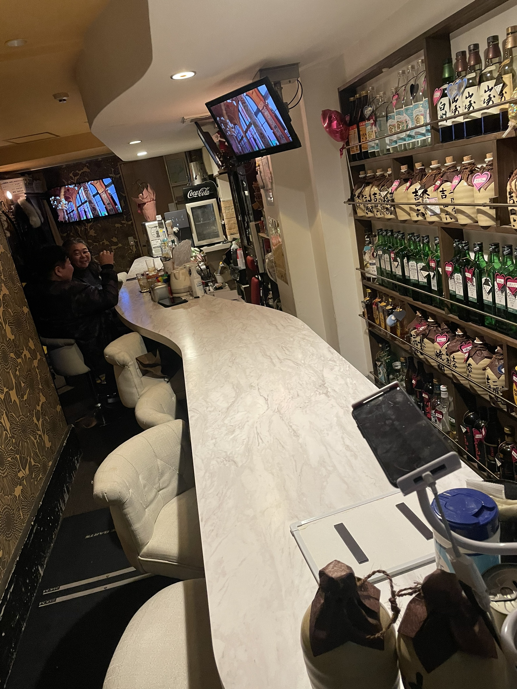
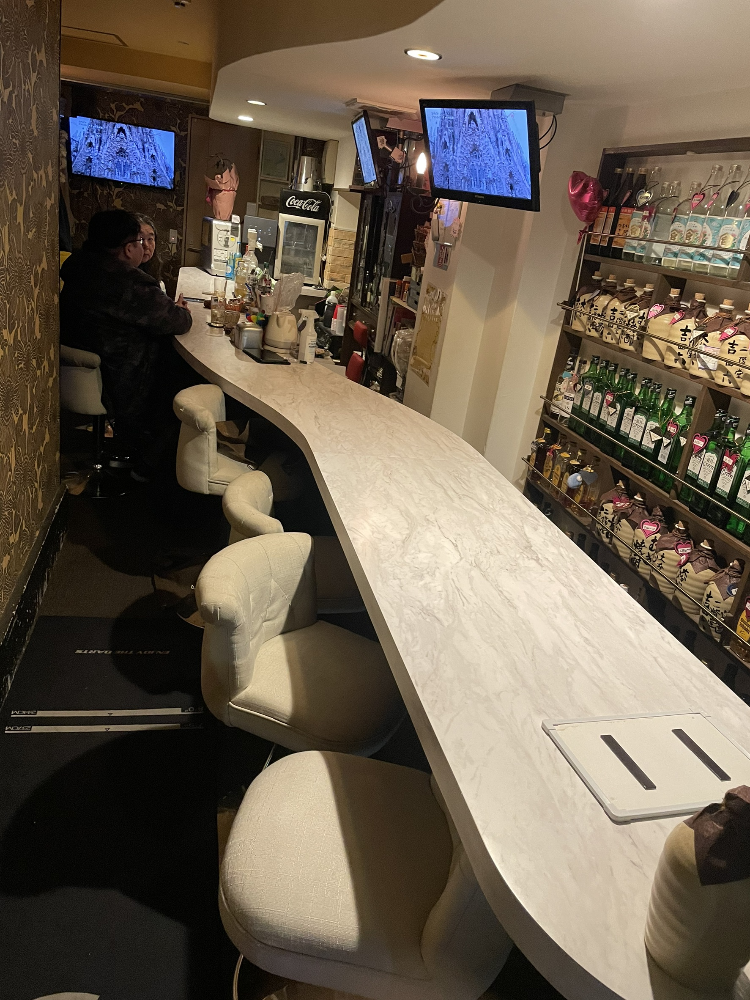
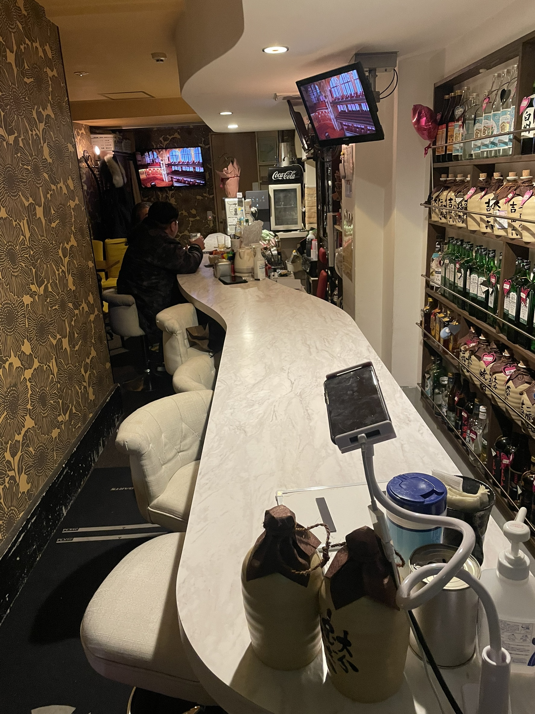
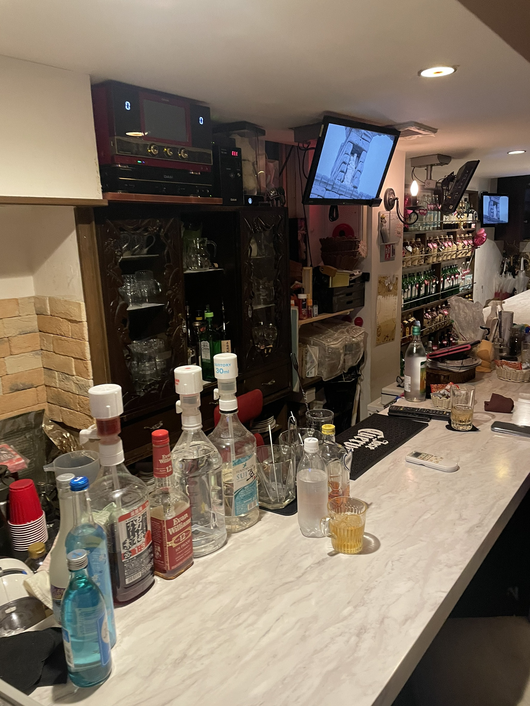
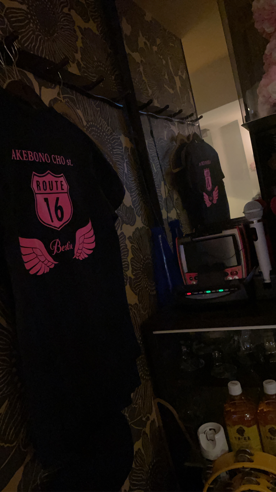

阪東橋駅 徒歩5分
|
横浜市中区 曙町
Bestie
気軽に帰ってこれる、
大人のセカンドリビング。
はじめてでも、友達の家に帰ってきた感覚。
横浜・曙町のカジュアルバーで、あなたの居場所を見つけて。
横浜・曙町のカジュアルバー。
SCROLL
CONCEPT
"距離の近いバー"で
出会う、あたらしい居場所。
店名の「Bestie（親友）」の通り、
お客様同士・スタッフ・地域がゆるやかに繋がる、
ただ飲むだけではない「居場所型」のバーとして営業しています。
カウンター中心の空間で生まれる自然な会話。一人で来ても、気づけば誰かと話している。常連も新規も関係なく、みんなが同じ「仲間」でいられる—そんな空気感を大切にしています。
「 友達の家に来た感覚 」

FEATURES
Bestie の 4つの魅力
01
初来店でも
溶け込める空気感
カウンター中心の距離感だからこそ生まれる会話。一人で来ても自然と会話が始まり、常連も新規も区別のないコミュニティが形成されています。
02
昼も夜も使える
柔軟な営業スタイル
仕事終わりの一杯、休日の昼飲み、ちょっとした空き時間に。生活のリズムに合わせて気軽に立ち寄れる生活密着型バー。
03
地域との繋がりを
大切にした営業
イベント出店や地域活動にも積極的に参加。単なる飲食店ではなく、街の交流拠点として親しまれています。
04
カジュアルに楽しめる
ドリンク
季節ドリンクやフルーツ系カクテルなど、「お酒に詳しくなくても楽しめる」ラインナップを中心に提供。バー初心者も大歓迎。
GALLERY
店内の雰囲気
最新の写真・イベント情報は Instagram でご確認いただけます。

Counter Seat

Interior

Bar Counter

Karaoke

Original Goods
INFORMATION
営業情報
営業時間
| 曜日 | 昼の部 | 夜の部 |
|---|---|---|
| 月 | — | 20:00 〜 翌3:00 |
| 火 | 12:00 〜 17:00 | 20:00 〜 翌3:00 |
| 水 | 12:00 〜 17:00 | 20:00 〜 翌3:00 |
| 木 | 12:00 〜 17:00 | 20:00 〜 翌3:00 |
| 金 | 12:00 〜 17:00 | 20:00 〜 翌3:00 |
| 土 | 12:00 〜 17:00 | 20:00 〜 翌3:00 |
| 日 | 12:00 〜 17:00 | 20:00 〜 翌3:00 |
定休日：不定休
ACCESS